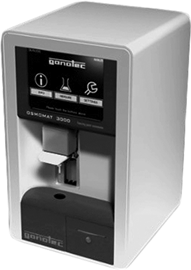

OSMOMAT 3000-D
Osmómetro

DESCRIPCIÓN:
El osmómetro OSMOMAT 3000-D determina la osmolaridad total de soluciones acuosas, requiere una muestra muy pequeña permitiendo mediciones rápidas en serie, en corto tiempo.
Está diseñado especialmente para mediciones de rutina en el campo médico, así como en investigación e industria.
CARACTERÍSTICAS:
El OSMOMAT 3000-D puede ser controlado fácilmente utilizando su pantalla táctil y siguiendo la guía paso a paso que se encuentra en todas las funciones de medición.
Tiene dos y tres puntos de calibración.
Los resultados pueden ser impresos.
ESPECIFICACIONES TÉCNICAS:
Pantalla: LCD-touch screen.
Dimensiones: 220 x 205 x 360 mm.
Volumen de muestra: 50 μl.
Tiempo de prueba: 60 segundos.
Resolución: 1 mOsmol/kg HMO.
Rango de medición: 3000 mOsmol/kg HMO.
Comunicaciones DTE RS-232 puerto serial, USB y puerto de código de barras.
Temperatura ambiente: 10 a 35°C.
Suministro de poder: 100-240 V, 50/60 Hz, 45 VA.
Peso aproximado: 6.4 kg.
Impresora y modos de impresión.
Impresión de errores.
• Disponible en venta o renta.
• Contamos con servicio de capacitación, mantenimiento preventivo, mantenimiento correctivo y actualización tecnológica.
• Disponibilidad de estándares de calibración y controles de calidad, copillas, papel y accesorios en general.
DATOS COMPLEMENTARIOS: Para mayor información comunicarse a:
GRUPO Eólica, S.A. DE C.V.
|
Teléfono: (55) 5584-4699 |
|